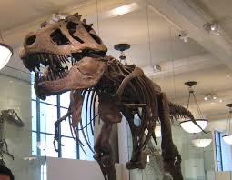

დინოზავრები მეზოზოურ ხანის განმავლობაში არსებობდნენ და დედამიწაზე დაახლოებით 230 მილიონი წლის წინ გამოჩნდნენ.
მათი პერიოდი მთავარ ორად იყოფა: ტრასიკულ და კრეტაციულ პერიოდებად.
ზოგი მათგანი შთანთქმისთვის მიემართებოდა, სხვები კი მტაცებლები იყვნენ.
მათი ცხოვრების სტილი და გარემო განსხვავდებოდა — მათ შორის იყვნენ დიდი და პატარა სახეობები,
როგორც საძოვრებზე, ისე ტყეებში.

რომელიც დაახლოებით 66 მილიონი წლის წინ მოხდა, დიდი ალბათობით მეტეორიტის დარტყმა იყო,
რამაც მნიშვნელოვანი კლიმატური ცვლილებები გამოიწვია.

მათი მემკვიდრეობა ბიოლოგიური მრავალფეროვნების კონტექსტში კიდევ დიდხანს გაგრძელდება.

ტირანოზავრი (Tyrannosaurus rex) - ერთ-ერთი ყველაზე ცნობილი მტაცებელი დინოზავრი, რომლის უზარმაზარი ზომა და ძლიერი ყბა მასმა დიდი პოპულარობა მოიპოვა
ველოცირეპტორი (Velociraptor) - პატარა, სწრაფი მტაცებელი
ტრიცერატოპსი (Triceratops) - სამი კვალის მქონე თავის ძველელური დინოზავრი, ცნობილი თავისი დიდი, ძლიერი ქალას და კომბინირებული ასაფეთქებლის წყალობით.
სტეგოზავრი (Stegosaurus) - ხანგრძლივი ტანისა და თავის უკანა მხარეს არსებულ ფოთლებს გამოირჩევა.
ბრახიოზავრი (Brachiosaurus) - ერთ-ერთი ყველაზე დიდი მცენარეწარმელი დინოზავრი, რომელიც მაღალი ყლორტების ძირში მცენარეების საჭმელად იყო განკუთვნილი.
დიპლოდოკი (Diplodocus) - კიდევ ერთი უზარმაზარი მცენარეწარმელი, ცნობილი თავისი გრძელი კუდით და კისრით.